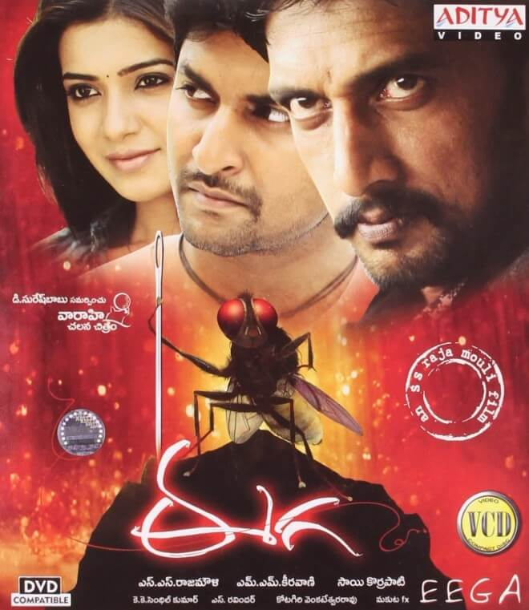

📅 Release Date: 6 July 2012
🌐 Languages: Original: Telugu, Tamil | Dubbed: Hindi, Malayalam, Kannada & Swahili | Subtitled: Japanese
🎭 Genre: Fantasy Action
A man is reborn as a housefly, takes revenge on the businessman who killed him, and protects the woman he loves. Eega was dubbed into Hindi (Makkhi), Malayalam (Eecha), and Kannada. It was first Telugu film into Swahili, a language spoken in East Africa, with the title Inzi: Kisasi Cha Mwisho. And it was released in Japan with the title Makkhi (マッキー) with Japanese subtitles.
Nani
Bindu
Sudeep
S. S. Rajamouli
Sai Korrapati
Vaaraahi Chalana Chitram
M. M. Keeravani
K. K. Senthil Kumar
Kotagiri Venkateswara Rao